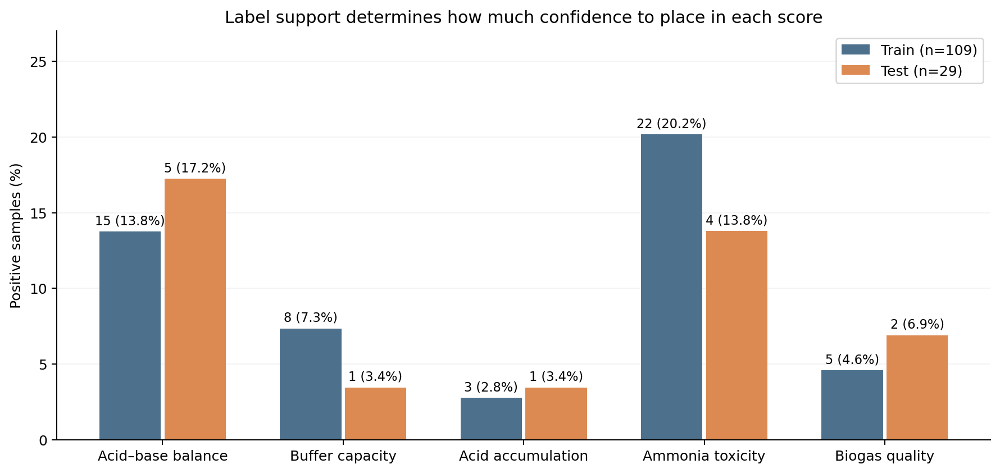

Explore per-label feature importance
Anaerobic digestion warning predictions
Six binary-relevance models · five warning labels · site-grouped validation.
NNET was selected using training CV AUPR. Its test AUPR is 0.509, but its MCC is 0.004 at threshold 0.5. KNN has the highest test MCC (0.338). Buffer capacity and acid accumulation each have just one positive test sample. Test rankings are descriptive.
How many positive samples?

Thresholds are fixed at 0.5. CV results were used for hyperparameter selection and are not unbiased nested-CV estimates. Known QC replicates are grouped with their parent sites; the analysis uses 35 grouping units. Full results · Site assignments